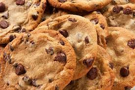

Cookie Recipe

Description
This is a recipe on how to bake chocolate chip cookies from scratch. This should take about 20 minutes total. This recipe has 24 servings.
Ingredients
- 3 cups all-purpose flour
- ¾ cup brown sugar
- 2 large eggs
- 1 cup butter, softened
- 1 cup semi-sweet chocolate chips
Steps
- Preheat the oven to 350 degrees F (175 degrees C).
- Sift flour and brown sugar into a bowl; stir in eggs. Mix butter into flour mixture until dough is creamy; fold in chocolate chips. Spoon dough onto a baking sheet, keeping them about 3 inches apart.
- Bake in the preheated oven until slightly brown, 10 to 15 minutes. Cool.